Шолоховский виноград, черенки и саженцы
Много лет занимаюсь разведением винограда. С мая по октябрь приглашаю на дегустацию и экскурсию по винограднику, а в ноябре можно забрать черенки и саженцы. Запись открыта круглый год.
Как учитель умею доходчиво объяснить как ухаживать за винградном и другими садовыми культурами. На свете существуют сотни сортов винграда и если вас такой выбор пугает, то буду рад помочь с рекомендациями.
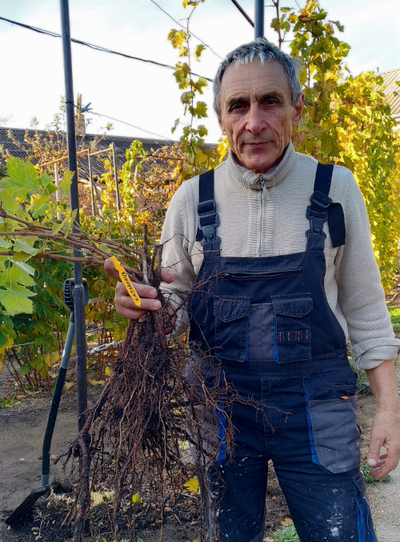
Контакты
Яицков Сергей Николаевич
Телефон
Часы работы
С 8 до 20 ежедневно


Новости
Дамские пальчики
Часто клиенты спрашивают виноград дамские пальчики и любые плоды продолговатой формы классифицируют соответственно, но такого таксономического названия не зарегистрированно. Максимум дамские пальчики это зонтичный термин не связанный с конкретным видом даже неформально.
О долголетии
Китайский стартап Lonvi Biosciences разрабатывает таблетки на основе виноградных косточек для продления жизни до 150 лет. RBK
Ассортимент
В наличии более 50 сортов винограда (в том числе, кишмиш и мускатный).
Цена на саженцы от 100 до 500р.
Ася

Байконур
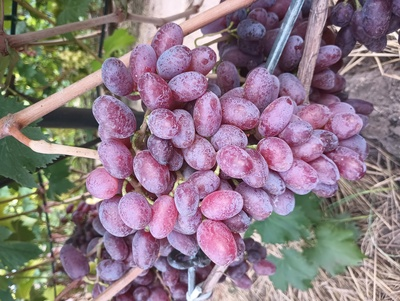
Виктор
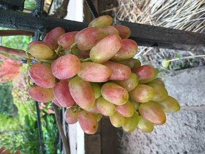
Гурман Ранний
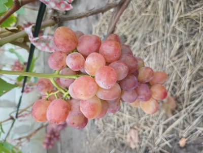
Дубовский Розовый

Карнавал
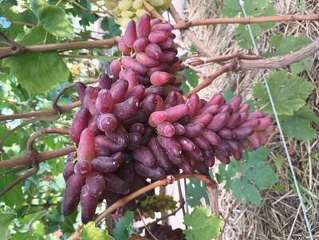
Ландыш
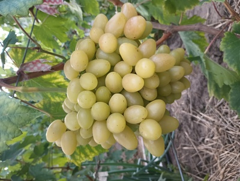
Ливия
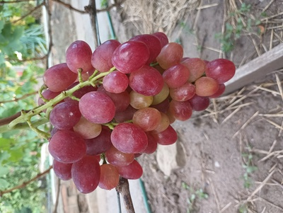
У сорта Ливия грозди с крупными розовыми ягодами, с ярко выраженным мускатным ароматом, сохраняющимся в ягоде после созревания до месяца. Сверхранний.
Монарх
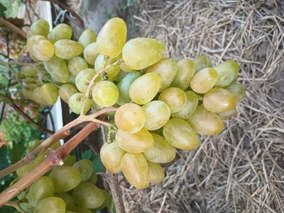
Тасон
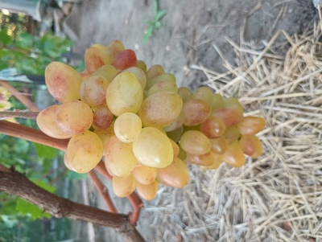
Шарада
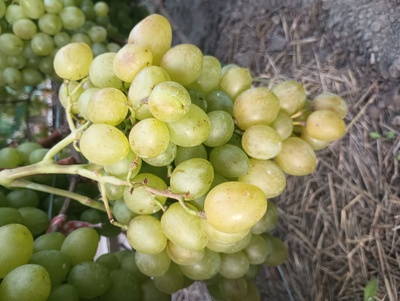
Флора

Черный Кристал
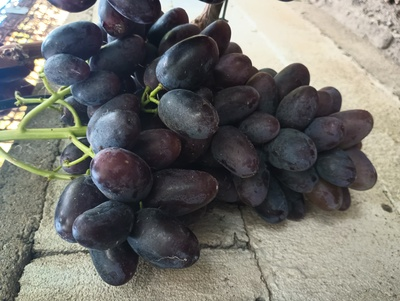
Юпитер
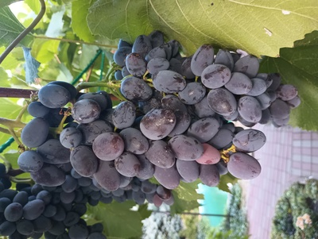
Кишмиш (без косточек), мякоть мясистая, кожица ягод плотная, а на вкус ягоды насыщенные, с тонами лабруски и мускатным ароматом.